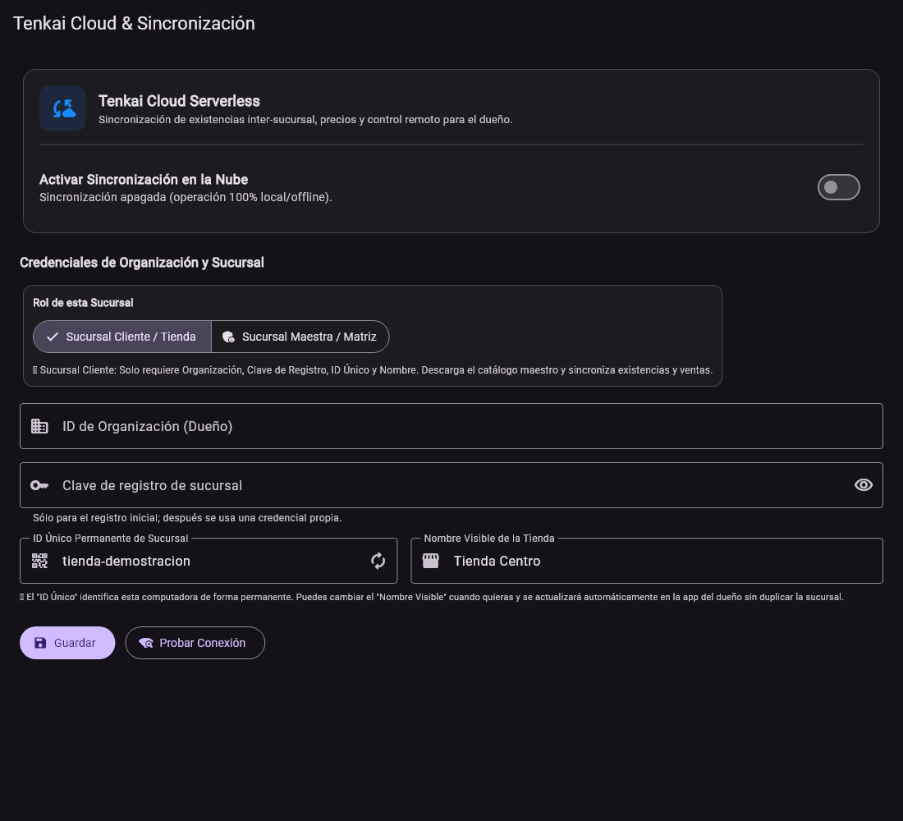

Manual de usuario
Servicio opcional para sucursales
Tenkai Sync
De la preparación a la operación diaria. Elige un tema o sigue la guía en orden.
Las opciones pueden variar según la edición, los permisos y la versión instalada.
01 / 08
Preparar la organización
Sync es un servicio opcional y actualmente se ofrece en piloto.
- Confirma con Tenkai el número de sucursales, alcance y condiciones.
- Define cuál será la matriz y qué catálogo compartirán.
- Recibe los accesos de organización y sucursales.
- Prepara versiones compatibles de POS y Boss.
02 / 08
Vincular una sucursal desde POS
Cada tienda debe tener su propia identidad.
- En POS, abre Configuración y Tenkai Cloud & Sincronización.
- Elige Sucursal Cliente / Tienda o Sucursal Maestra / Matriz según el papel acordado.
- Captura los datos de organización y el acceso de registro entregados por Tenkai.
- Asigna un nombre reconocible a la tienda y conserva su identidad.
- En la matriz, usa el acceso del dueño solo cuando corresponde publicar el catálogo.
- Guarda y utiliza Probar Conexión.


Ampliar pantallaVinculación del POS con la organización y la tienda correspondientes.
Pantallas de las aplicaciones con datos de demostración. La apariencia y las opciones pueden variar según versión, edición y permisos.
03 / 08
Preparar el catálogo que compartirán
La política determina los campos que deben coincidir.
- Revisa productos, códigos y reglas de la matriz.
- Configura la política de catálogo con el dueño.
- Utiliza la acción de publicación o descarga que corresponde a la tienda.
- Comprueba un grupo de productos antes de extender los cambios.
04 / 08
Publicar un cambio y comprobarlo
La publicación y la confirmación de cada tienda son pasos distintos.
- Crea o modifica el producto desde Boss o la matriz autorizada.
- Guarda y publica el cambio.
- Deja conectados los POS de las tiendas para recibirlo.
- En Boss, consulta el estado de actualización.
- Comprueba el producto en las tiendas que recibieron el cambio.
05 / 08
Qué ocurre si una tienda pierde internet
El POS puede mantener su operación local mientras el servicio no está disponible.
- Continúa las tareas locales permitidas en POS.
- Identifica que los reportes y cambios remotos pueden quedar pendientes.
- Al recuperar internet, deja que la tienda envíe y reciba sus actualizaciones.
- Verifica su confirmación en Boss.
06 / 08
Reportes para el dueño
Boss consulta los datos que las tiendas ya enviaron.
- Revisa el estado de conexión por sucursal.
- Consulta existencias, cortes y movimientos desde Boss.
- Comprueba cuándo llegó el último reporte.
- Atiende las tiendas que no reportan antes de sacar conclusiones de sus resultados.
 Ampliar pantalla
Ampliar pantallaBoss permite revisar la confirmación de las actualizaciones.
Pantallas de las aplicaciones con datos de demostración. La apariencia y las opciones pueden variar según versión, edición y permisos.
07 / 08
Sync y las copias de seguridad
La sincronización comercial y recuperar una computadora son tareas diferentes.
- Mantén las copias de seguridad locales del POS.
- Conserva una copia fuera de la computadora principal.
- Comprueba el procedimiento de recuperación.
- Consulta por separado la disponibilidad futura de respaldos en nube.
08 / 08
Resolver una conexión pendiente
Revisa la configuración sin borrar ventas ni pendientes.
- Usa Probar Conexión desde la pantalla de la sucursal.
- Comprueba el nombre de tienda y organización.
- Revisa la vigencia del servicio y el acceso entregado.
- Consulta soporte para conflictos de catálogo o una sucursal que no confirma.
Ayuda con tu instalación
Si un pendiente no se resuelve, conserva la operación y contacta a Tenkai con el nombre de la aplicación, versión y descripción del problema. Comparte capturas que no muestren accesos ni datos de clientes.
Contactar soporte